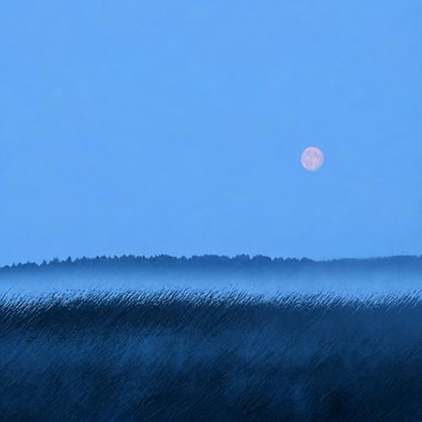

BW / 001
FEATURED ALBUM
The Bloodmoon
Monsoon
Enter the storm. A collection of songs from Buried West.
EXPLORE ON YOUTUBE ↗✳ INDEPENDENT SOUNDS / OPEN SKIES
Music for the hours between nightfall and nowhere.
ODD LITTLE SONGS FROM THE FAR SIDE OF THE MOON
✳01 / THE MUSIC
TRACKS, TRANSMISSIONS, AND OTHER THINGS FOUND ALONG THE WAY.
FEATURED ALBUM
Enter the storm. A collection of songs from Buried West.
EXPLORE ON YOUTUBE ↗
Visual artwork on this temporary site is illustrative. Official cover art and direct streaming links can be added anytime.
02 / BEHIND THE SOUND
Buried West is an independent music project exploring strange textures, winding melodies, and the feeling of being lost in the right direction.
Made for late drives, open roads, and anyone who finds a little beauty in the unusual.
STEP INTO THE MUSIC ↗03 / KEEP IN TOUCH
New music, live sessions, and whatever happens next.